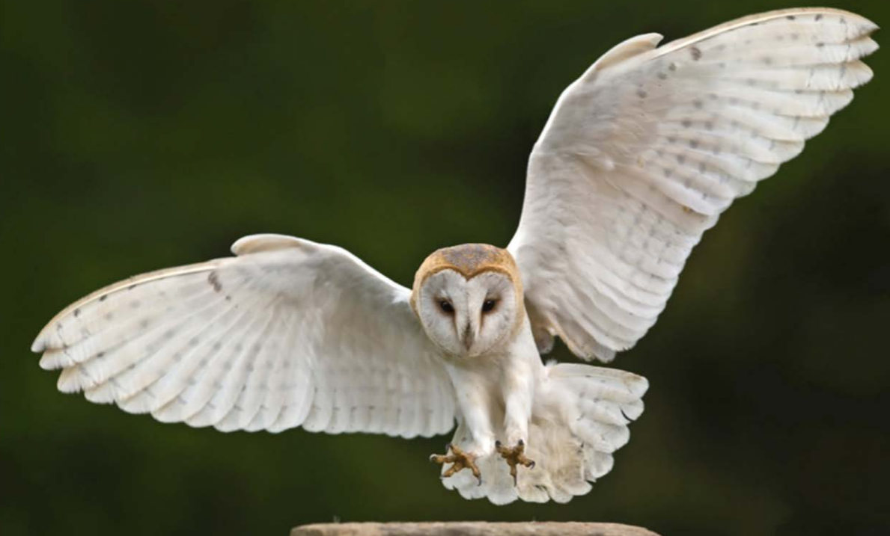
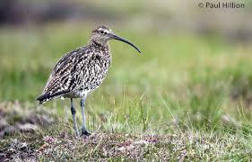
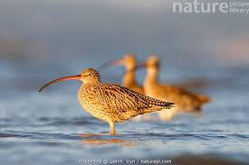
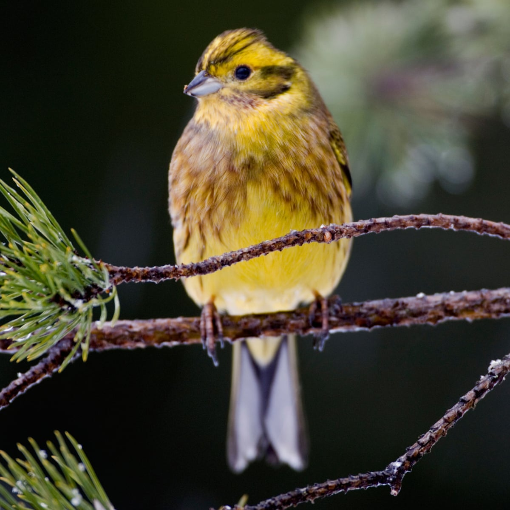
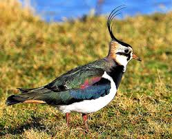

Bired of Conservation Ireland
There are a number of birds in ireland whose number are in deciline .some of
those with a high priority for conservation are;
Barn Owl
the barn owl is the most common owl and is found in most parts of the world
it has seen a hug deciline in ireland and Europe in recent years.

Curlew
the curelw is recognisable by its long curved bill.

curlews use thier long bills to search for worms in mud of very soft ground.

Yellowhammer
the yellowhammer is a large bunting with a yellow head and a streaked brown
back it usually lives in dry , open countryside with some trees of hedges.

Lapwing
the lawpsing is back and white with a wispy crest
it is a wader which means you can see it wetland areas

Other Birds
some birds are also listed as being of medium conservation concern. here
are you might be familiar with:
- Hen Harrier
- Puffin
- Kestrel
- House Sparrow
- Kingfishr
Click here is the complete published list